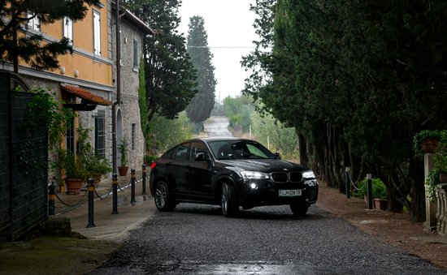

menu
domov
o nas
Življenjepis
Rojstvo
Zgodovina
Vozila
Stari modeli
Novi modeli
Športni modeli
ostalo
dnevnik
kontakt
Življenjepis BMW
BMW, ali Bayerische Motoren Werke, je ena izmed najbolj cenjenih avtomobilskih znamk na svetu, poznana po inženirski odličnosti, zmogljivosti in inovacijah. Podjetje je bilo ustanovljeno leta 1916 in svojo pot začelo kot proizvajalec letalskih motorjev.
Skozi desetletja se je BMW uspešno soočal z globalnimi izzivi in ohranjal osredotočenost na razvoj vrhunskih vozil. Od prehoda na proizvodnjo motociklov in avtomobilov v medvojnem obdobju do vodilne vloge v luksuznem avtomobilskem segmentu danes, je BMW ostal sinonim za tehnološki napredek.
Danes podjetje združuje tradicijo z modernimi rešitvami, s poudarkom na električni mobilnosti, trajnosti in digitalnih inovacijah, kar potrjuje njegovo vlogo kot pionirja prihodnosti mobilnosti.
Začetki in Rast
Leta 1916 je bil BMW ustanovljen kot proizvajalec letalskih motorjev, z osredotočenostjo na visoko tehnično natančnost. Med prvo svetovno vojno je pridobil sloves zaradi učinkovitih in zmogljivih motorjev.
Po vojni je podjetje zaradi Versajske pogodbe moralo preusmeriti proizvodnjo, kar je vodilo do razvoja prvega motocikla BMW R32 leta 1923 – model, ki je postal ikona in osnova za prihodnjo moto-serijo.
V tridesetih letih je BMW vstopil na trg avtomobilov in hitro pridobil ugled s kakovostnimi in luksuznimi modeli, ki so postavili temelje za njegovo današnjo prepoznavnost.
Inovacija
Vožnja
Zmogljivost
Natančnost
Luksuz

Udobje
Oblikovanje
Moč
BMW — The Ultimate Driving Machine
BMW Innovation & Performance
BMW Luxury & Engineering Excellence
BMW Driving Experience Redefined
Preizkušnje in Obnovitev
Druga svetovna vojna je BMW močno prizadela – tovarne so bile uničene, podjetje pa je bilo skoraj na robu propada. V povojnih letih je bila proizvodnja močno omejena.
V petdesetih letih se je BMW postopoma vrnil na trg z modelom BMW 501, kar je predstavljalo prehod v razred luksuznih avtomobilov in začetek nove razvojne poti.
Vzpon in Globalni Uspeh
Prava prelomnica je bila predstavitev serije Neue Klasse v šestdesetih letih, ki je združevala športnost, dizajn in napredno tehnologijo. BMW se je uveljavil kot vodilni proizvajalec avtomobilov za zahtevne voznike.
V naslednjih desetletjih je BMW razširil svojo ponudbo, vključno z limuzinami, kupeji, SUV-ji in visoko zmogljivimi modeli M. Hkrati so vpeljali številne inovacije na področju varnosti, udobja in povezljivosti.
Sodobnost in Trajnost
V zadnjem desetletju je BMW postal eden vodilnih proizvajalcev električnih vozil. Modela i3 in i8 sta simbol preboja v trajnostni mobilnosti, ki združuje ekologijo in dinamiko.
Podjetje aktivno razvija hibridne pogone in digitalne storitve, ki uporabnikom omogočajo boljšo izkušnjo ter zmanjšujejo vpliv na okolje.
BMW danes ni le avtomobilski proizvajalec, ampak tehnološka znamka prihodnosti, ki z inovacijami in trajnostjo gradi most med preteklostjo in prihodnostjo.
BMW — The Ultimate Driving Machine
BMW Innovation & Performance
BMW Luxury & Engineering Excellence
BMW Driving Experience Redefined
Ključni Mejniki v Življenjepisu
1916 – Ustanovitev podjetja kot proizvajalca letalskih motorjev.
1923 – Predstavitev prvega motocikla BMW R32, ki je zaznamoval vstop v svet dvo-kolesnikov.
1950. leta – Prehod v luksuzni avtomobilski segment z modelom BMW 501.
1962 – Serija Neue Klasse kot temelj sodobne identitete znamke.
2013–2014 – Prihod električnih modelov i3 in i8, ki pomenijo novo ero trajnostne mobilnosti.
Vizija in Vrednote
BMW ostaja zvest viziji mobilnosti prihodnosti, ki temelji na napredni tehnologiji, odlični vozni izkušnji in odgovornem odnosu do okolja.
Inovativnost, trajnost, zmogljivost in eleganca ostajajo ključni stebri, ki BMW uvrščajo med vodilne igralce v avtomobilski industriji danes in v prihodnosti.